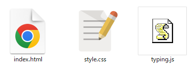
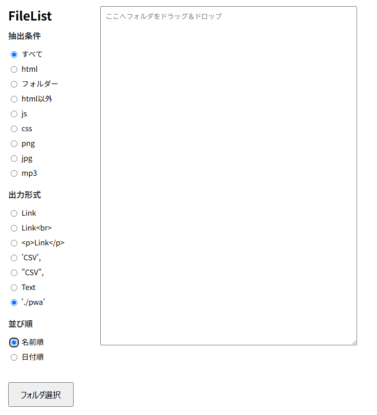
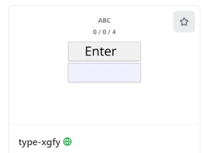
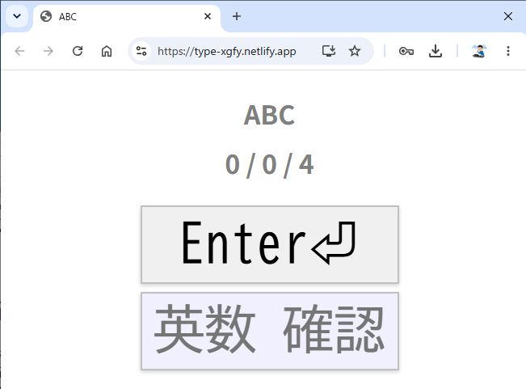
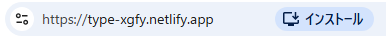
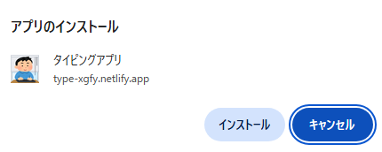
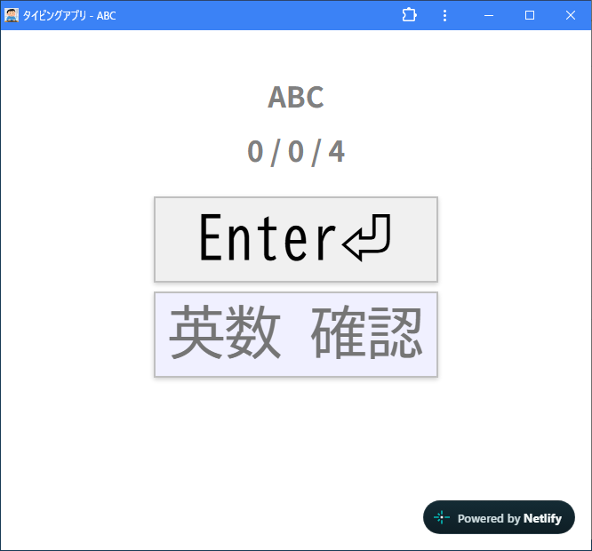
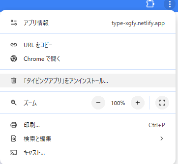

<!doctype html>
<html lang="ja">
<head>
<meta charset="utf-8">
<link rel="stylesheet" href="style.css">
<title>タイピング練習</title>
<link rel="manifest" href="manifest.json">
<meta name="theme-color" content="#3b82f6">
<script src="./register-sw.js" defer></script>
</head>
<body>
</body>
</html>
{
"name": "タイピングアプリ",
"short_name": "タイピング",
"start_url": "./",
"display": "standalone",
"background_color": "#ffffff",
"theme_color": "#3b82f6",
"icons": [
{
"src": "icon-192.png",
"sizes": "192x192",
"type": "image/png"
},
{
"src": "icon-512.png",
"sizes": "512x512",
"type": "image/png"
}
]
}
if ('serviceWorker' in navigator) {
window.addEventListener('load', () => {
navigator.serviceWorker.register('./sw.js')
.then((reg) => {
console.log('Service Worker 登録成功:', reg.scope);
})
.catch((err) => {
console.log('Service Worker 登録失敗:', err);
});
});
}
const CACHE_NAME = 'typing-pwa-ver1';
const urlsToCache = [
'./',
'./index.html',
'./style.css',
'./typing.js'
];
// インストール時にファイルをキャッシュ
self.addEventListener('install', (event) => {
event.waitUntil(
caches.open(CACHE_NAME)
.then((cache) => {
return cache.addAll(urlsToCache);
})
);
});
// キャッシュからレスポンスを返す
self.addEventListener('fetch', (event) => {
event.respondWith(
caches.match(event.request)
.then((response) => {
return response || fetch(event.request);
})
);
});

キャッシュする必要のあるファイルのリストconst urlsToCache = [ './', './index.html', './style.css', './typing.js', './manifest.json', './register-sw.js', './sw.js', './icon-192.png', './icon-512.png', ];

ブラウザのURL右側にインストールボタン

インストールのダイアログ
ショートカットができる アプリのような画面
設定は︙から行う